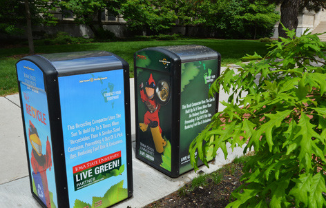

Recycling Info for Iowa
Do's and Dont's
DO's
- Keep recycling materials loose and bag all trash for curbside pickup
- Recycle clean, dry, amd flat paper products.
- Recycle empty soda or food cans
- Recycle plastics such as plastic bottles and yogurt and butter tubs
- Recycle other materials such as glass, vegetable oil, motor oil, holiday lights, tires, and wine corcks at select drop- off Recycling locations!
DONT's
- Recycle styrofoam, plastic bags, gift wrapping paper, or clamshell plastic containers.
- Place masks, batteries, glass, electronics, and dirty pizza boxes in the curbside recycling
Recycling drop-offs in Iowa:
- Iowa City Landfill and Recycling Center: 3900 Hebl Avenue SW, Open 7 a.m. - 4:30 p.m. Monday - Saturday
- Coralville Recycling Center: 950 Hughes Street, 24/7
- South Riverside Recycling Center: 1200 South Riverside Drive, 24/7
- East Side Recycling Center: 2401 Scott Blvd. SE, 24/7
Sources:
- https://www.amestrib.com/ZZ/sponsored/20190627/recycling-101-know-what-to-throw
- https://www.icgov.org/recycling
